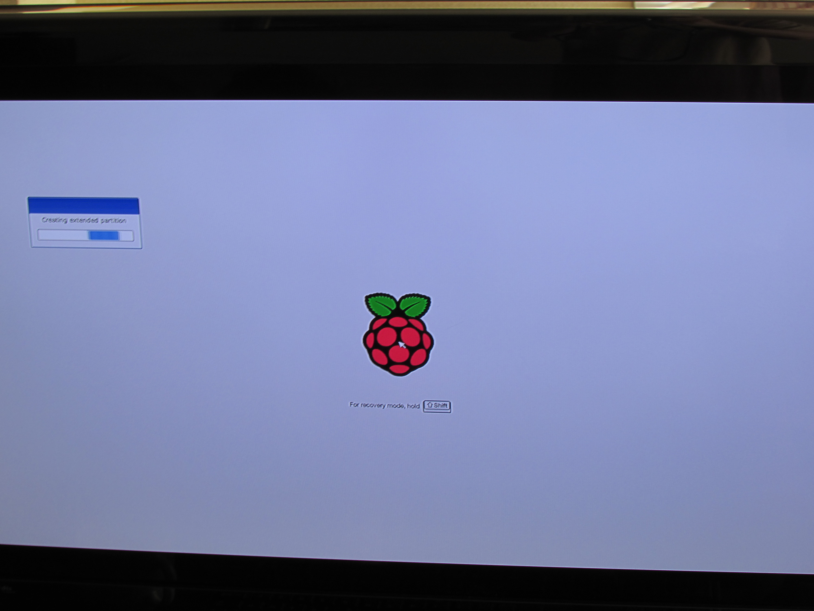
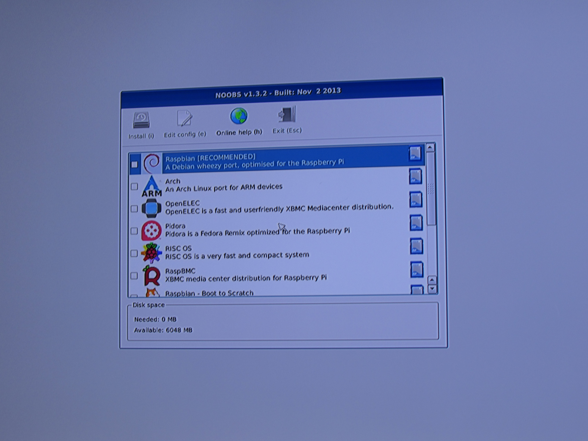
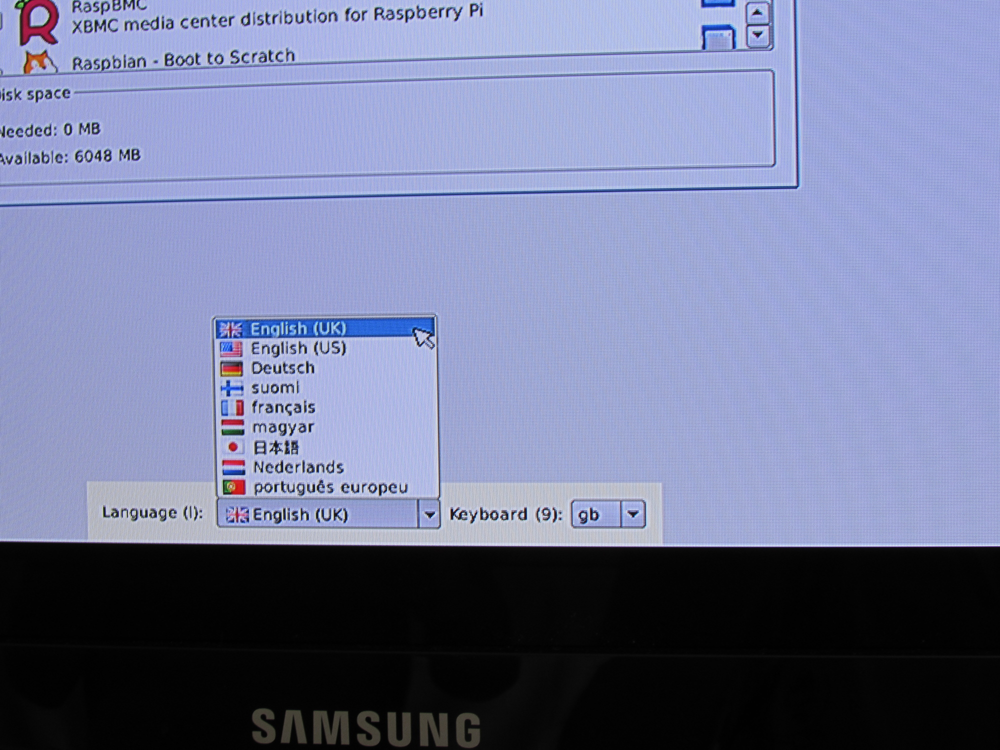
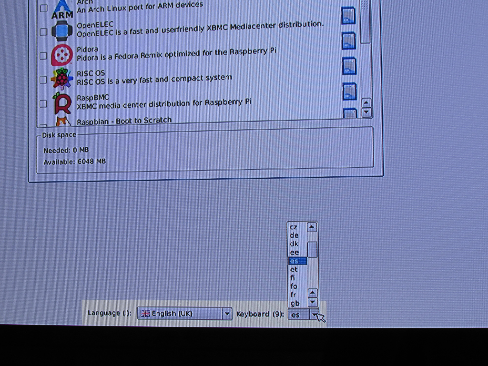
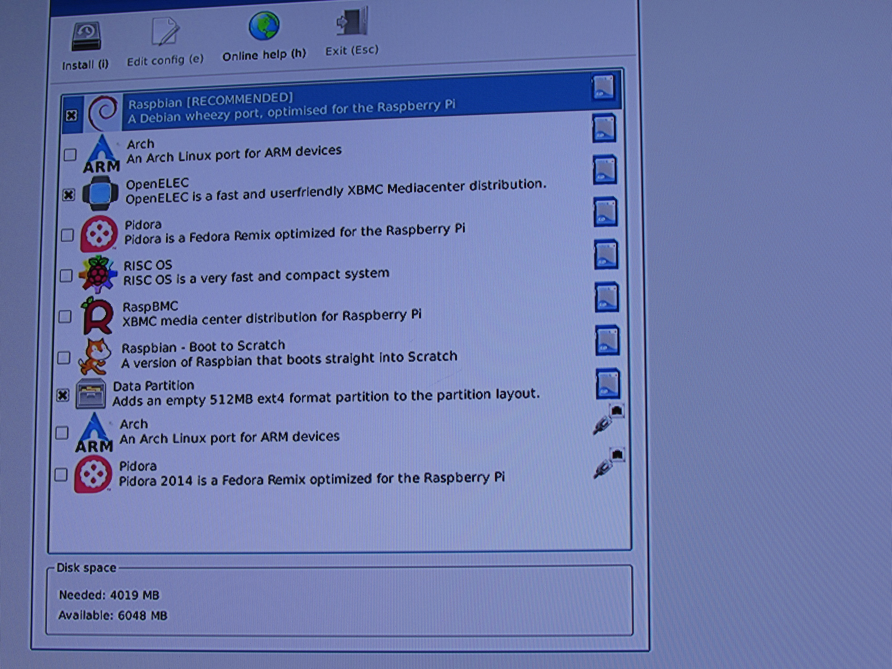
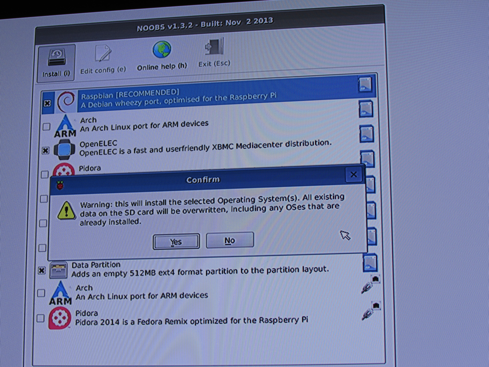
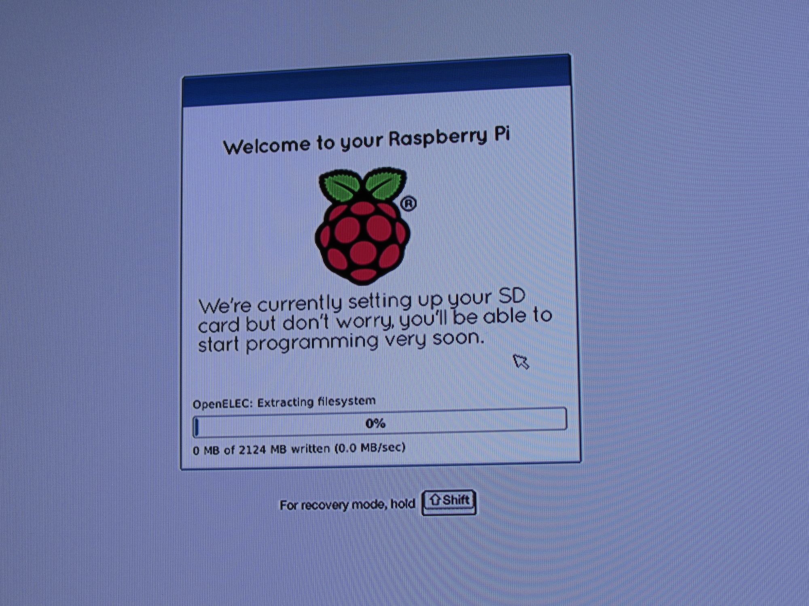
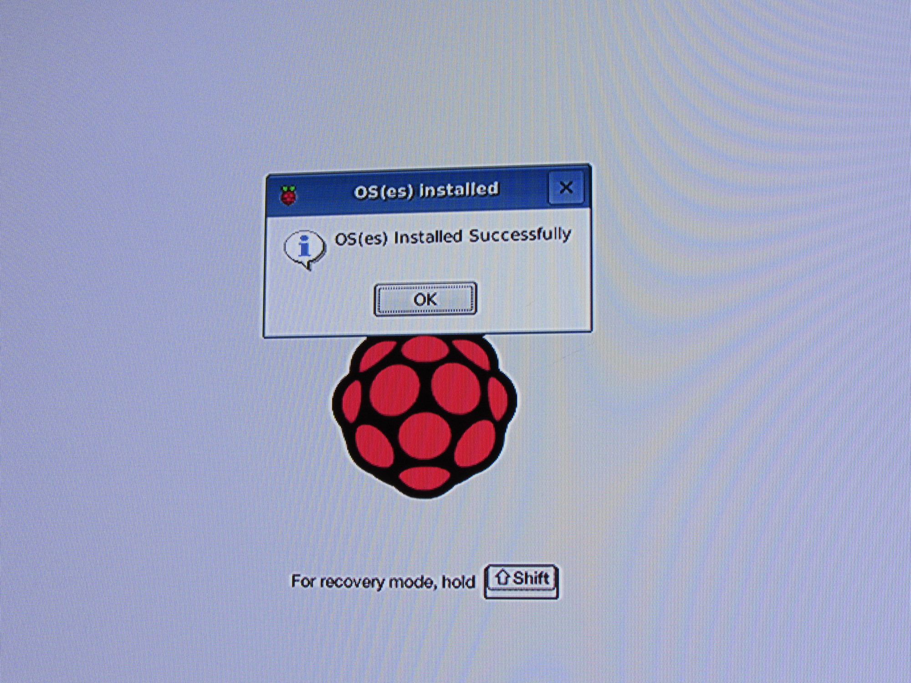
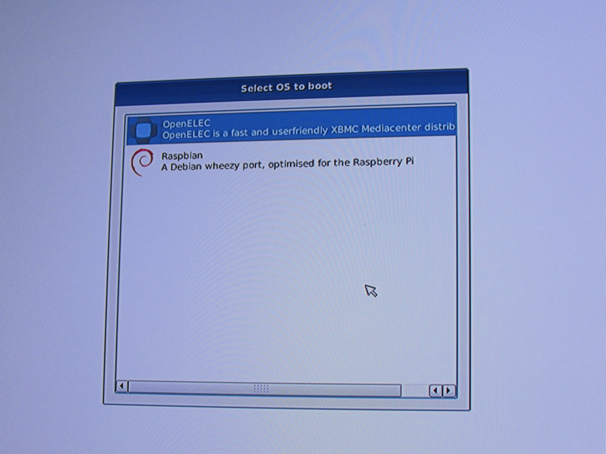

Instalación de Noobs
No tiene mucho sentido hacer un tutorial sobre esta instalación, ya que realmente no se trata de un S.O si no más bien un programa para novatos, pero aún así lo haré. Cuando se tiene la imagen de NOOBS en la tarjeta SD, se inserta en la Raspberry Pi, previamente antes conectado el cable HDMI a la pantalla teclado, cable ethernet (ya que al principio el Wifi no funciona) y después la alimentación (ya que no tiene un botón de encendido). Aparecerá una imagen del logo de la Raspberry Pi por primera vez y se estará creando las particiones y sistema de ficheros correspondientes. 
Cuando acabe de crear las particiones se iniciará NOOBS donde se podrá elegir que S.O se quiere. 
Se puede cambiar el idioma del instalador pero desafortunadamente no dispone de español. 
Y a la derecha se puede cambiar el idioma del teclado, en este caso si que se puede elegir español. 
Una vez configurado las opciones de abajo, ya se puede seleccionar las distribuciones que se desean. La opción Data partition crea una partición en la que se guarda información y se mantendrá a futuras reinstalaciones de los S.O. 
Al decidir las distribuciones se clicka en Install y saldrá una ventana emergente que informa que se borrará la SD, se selecciona Yes 
Ahora empezará a escribir los S.O en la tarjeta SD, tardará un rato de modo que no se toca nada. 
Cuando finalize saldrá una ventana conforme se ha instalado correctamente se le da a OK 
Y listo ya se tiene el arranque instalado como el Grub en Linux. 